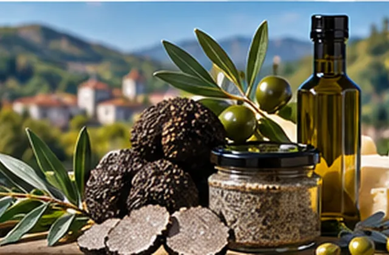
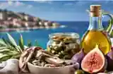
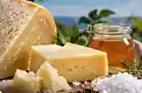
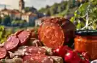

Histria
Olivenöl, Trüffel und Fuži
Von Olivenhainen und Inselküchen bis zur Spezialitäten des Hinterlands.

Die vier Genusswelten stehen für kulinarische Traditionen. Die konkrete Lieferherkunft findest du beim jeweiligen Produkt, sobald sie feststeht.

Olivenöl, Trüffel und Fuži

Feigen, Kapern und Meerfenchel an der Küste. Ajvar, Pflaumen und Eingekochtes aus dem Hinterland.

Meersalz, Oliven und Spezialitäten von den Inseln

Paprika, Kürbiskernöl und Spezialitäten aus der Ebene
Über die Adria und durch ihr Hinterland reisten Zutaten, Rezepte und Zubereitungsweisen. Die Geschichte Roms und Venedigs, die osmanische Zeit und die gemeinsamen Traditionen mit Ungarn und der Habsburgermonarchie hinterließen Spuren in den Küchen der Region.
Rezepte entdecken →Entdecke Geschenkboxen mit Spezialitäten aus den Genusswelten.
Geschenkboxen ansehen →